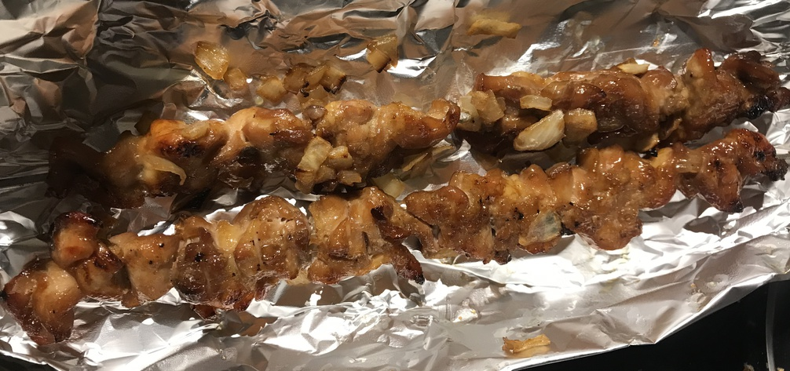

| Other | Meat | Veggie | Fruit |
|---|---|---|---|
| bourbon | chicken thigh | onion | |
| brown sugar | shallot | ||
| corn starch | |||
| five spice powder | |||
| hoisin | |||
| soy sauce | |||
| sugar |
| instructions |
|---|
| Make bourbon sauce: ratio of 4 brown sugar : 4 sugar : 4 soy sauce : 1 hoisin : 1 bourbon : 0.5 five spice : 16 water with some cornstarch to thicken |
| Debone skin-on chicken thighs, slice thinly |
| Marinate chicken with onions or shallots and some of the bourbon sauce |
| Put chicken slices on skewers |
| Grill under broiler, occasionally coating both sides with sauce |